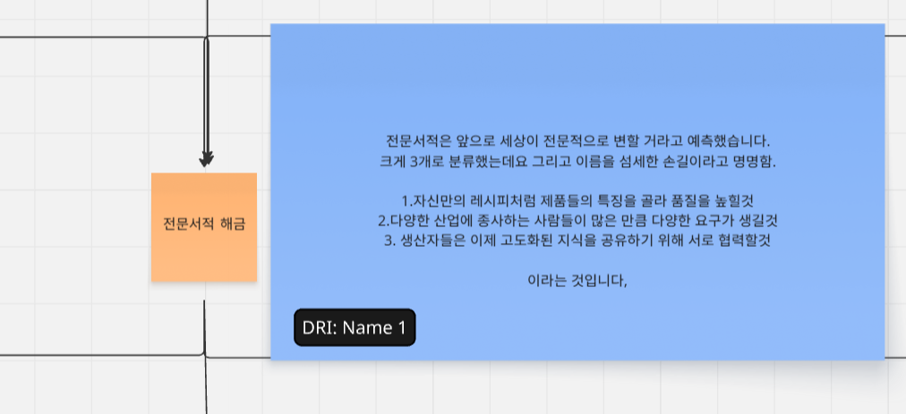
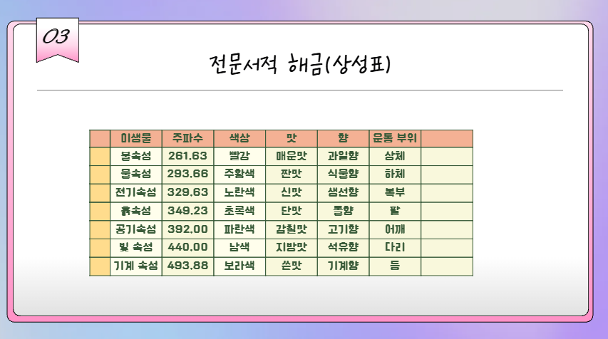

Professional Book
전문서적 해금
제품 품질, 다양한 요구, 생산자 협력을 여는 전문화 시스템입니다.

전문화 방향
| 분류 | 의미 |
|---|---|
| 제품 특징 강화 | 레시피처럼 제품의 특징을 골라 품질을 높입니다. |
| 요구 다양화 | 산업군과 소비자층이 늘어나며 요구가 다양해집니다. |
| 지식 공유 | 생산자들이 전문 지식을 공유하고 협력합니다. |
미생물 상성표

| 미생물 | 주파수 | 색상 | 맛 | 향 | 문틈 부위 |
|---|---|---|---|---|---|
| 불속성 | 261.63 | 빨간색 | 매운맛 | 과일향 | 상체 |
| 물속성 | 293.66 | 주황색 | 짠맛 | 식물향 | 하체 |
| 전기속성 | 329.63 | 노란색 | 신맛 | 생선향 | 복부 |
| 흙속성 | 349.23 | 초록색 | 단맛 | 물향 | 팔 |
| 공기속성 | 392.00 | 파란색 | 감칠맛 | 고기향 | 어깨 |
| 빛속성 | 440.00 | 남색 | 지방맛 | 석유향 | 다리 |
| 기계속성 | 493.88 | 보라색 | 쓴맛 | 기계향 | 등 |